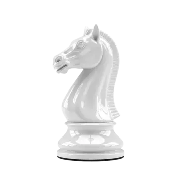

"64". Мир шахмат — от древности до наших дней
История, теория, великие имена и лучшие ресурсы для игры. Всё, что нужно знать о шахматах — в одном месте.

О чём этот сайт
Шахматы прошли путь длиной в полторы тысячи лет: от индийской чатуранги до турниров с призовыми фондами в миллионы долларов. Узнай, как игра менялась вместе с миром.
Дебют, миттельшпиль, эндшпиль — три кита шахматной партии. Разберись, как ходят фигуры, что такое вилка и почему пешка может стоить дороже ферзя.
Каспаров*, Фишер, Карлсен, Карпов, Ласкер… Люди, которые меняли представление о шахматах. Их партии, их стиль, их наследие.
С чего начать
- 📜 История шахмат — От чатуранги до Магнуса Карлсена
- ♟ Правила игры — Как ходят фигуры и как выиграть партию
- 👑 Великие шахматисты — 10 легенд и их вклад в игру
- 🔗 Полезные ресурсы — Где играть, учиться и смотреть партии
Фигура дня
Конь ♘
Конь — единственная фигура, которая может перепрыгивать через другие. Его ход напоминает букву «Г»: две клетки в одном направлении и одна — в перпендикулярном. В дебюте конь сильнее слона, в эндшпиле — слабее. Недаром говорят: «Конь на краю — позор для всадника».

Краткая хронология
-
- VI век — Чатуранга (Индия)
- Древняя игра для четырёх игроков на доске 8×8. Фигуры: пехота, конница, слоны и колесницы. Цель — не мат короля, а уничтожение всей армии противника.
-
- VII век — Шатрандж (Персия)
- После завоевания Индии арабами игра распространилась по Ближнему Востоку. Появилось понятие «шах» (от персидского «шах мат» — «король мёртв»).
-
- X–XV века — Шахматы в Европе
- Игра доходит до Европы. Меняются правила: ферзь становится самой сильной фигурой, слон и ладья обретают современные ходы. К XV веку формируются привычные нам шахматы.
-
- 1886 год — Первый чемпион мира
- Вильгельм Стейниц побеждает Иоганна Цукерторта в матче и становится первым официальным чемпионом мира по шахматам.
-
- 1924 год — Основана ФИДЕ
- Международная шахматная федерация объединяет национальные федерации и начинает проводить официальные турниры.
-
- 1997 год — Компьютер побеждает человека
- IBM Deep Blue обыгрывает Гарри Каспарова* в матче из 6 партий. Это переломный момент в истории шахмат.
-
- Наши дни — Эра онлайн-шахмат
- Пандемия 2020 года вызвала бум онлайн-шахмат. Миллионы людей играют на Lichess, Chess.com, смотрят стримы и учатся у ИИ-тренеров.
Интересный факт
Слово «шахматы» происходит от персидского «шах мат» — «король мёртв». А слово «чек» в английском (проверка, чек) — от персидского «шах»: «шах» означало нападение на короля.
Масштаб игры в цифрах
Шахматы кажутся простыми: доска 8×8 и 32 фигуры. Но количество возможных партий в них больше, чем количество атомов во всей видимой Вселенной!
- 10¹²⁰ — примерное количество возможных шахматных партий (Число Шеннона).
- 10⁸⁰ — для сравнения, столько атомов во Вселенной.
- 10⁴⁴ — количество уникальных легальных позиций на доске.
- 218 — максимальное количество ходов, доступных одному игроку в одной позиции.
* Примечание: Нам необъходимо выполнить требование российского законодательства: Гарри Каспаров* после завершения спортивной карьеры занимается политической деятельностью. Внесен Минюстом РФ в реестр иностранных агентов, а Росфинмониторингом — в перечень террористов и экстремистов.